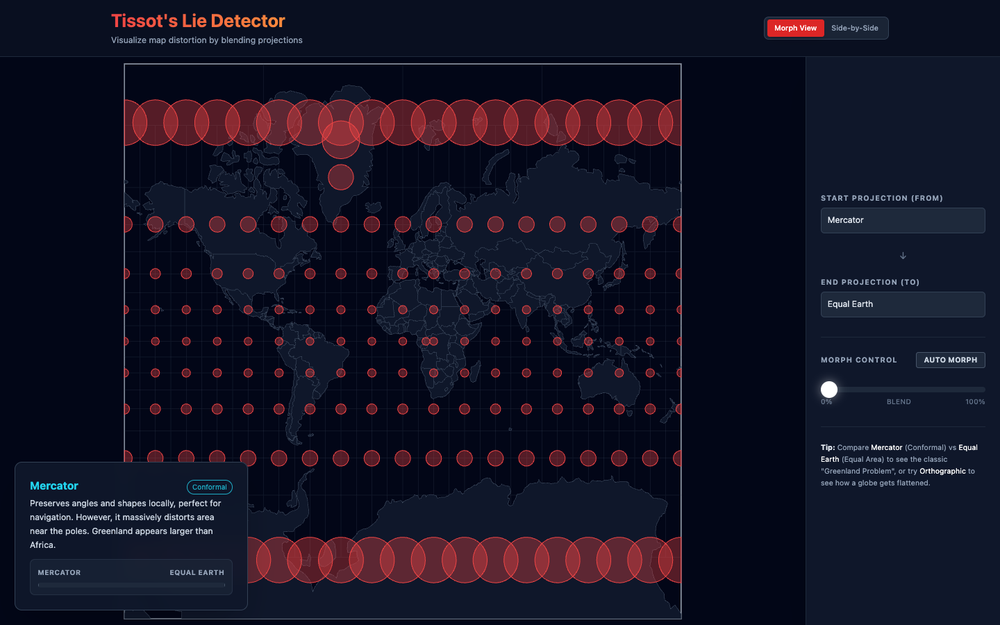
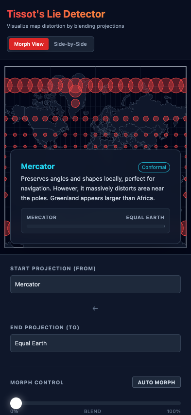

Implementation 1: Shape Shifter
Gemini 3 Pro – Google AI Studio
Grade: A+ ✓ Deployed ✓ Mobile Optimized
Status: Working in 3 prompts, polished in ~10 more
URL: shape-shifter-gis-day-903076358991.us-west1.run.app
What Works:
- Smooth morphing animations between 6+ projections (Equirectangular, Mollweide, Berghaus Star, Sinusoidal, and more)
- Graticule deforms along with landmasses for visual clarity
- Animation controls: Play/Pause, Reset, Skip to next
- Speed controls: 0.5x, 1x, 2x, 5x
- Real-time projection labels with educational descriptions
- Dark theme with cyan accents
Technical Implementation:
- D3.js with d3-geo and d3-geo-projection
- Natural Earth 110m land data from world-atlas CDN
- SVG rendering for crisp visuals
- Smooth transition interpolation between projection states
Gemini 3 Strengths: Animation handling, D3 expertise, design sense, iterative refinement


Implementation 2: Tissot's Lie Detector
Gemini 3 Pro – Google AI Studio
Grade: A+ ✓ Deployed ✓ Mobile Optimized
Status: Working in 3 prompts, expanded to 9 projections in ~10 more
URL: tissot-s-lie-detector-903076358991.us-west1.run.app
What Works:
- Grid of Tissot circles (indicatrices) overlaid on world map
- Clearly demonstrates area distortion (e.g., Mercator's polar exaggeration)
- 9 projections: Mercator, Equal Earth, Natural Earth, Equirectangular, Mollweide, Robinson, Winkel Tripel, Sinusoidal, Orthographic
- Morph View: Smooth blend between two projections with a slider
- Side-by-Side View: Compare projections simultaneously
- Auto-morph button for continuous animation
- Educational descriptions for each projection
Technical Implementation:
- D3.js with extended d3-geo-projection library
- Natural Earth 110m countries data from world-atlas CDN
- SVG rendering with smooth interpolation
- Tissot circles correctly placed and sized
Gemini 3 Strengths: Mathematical accuracy, complex interactions, educational UX, feature expansion through iteration

